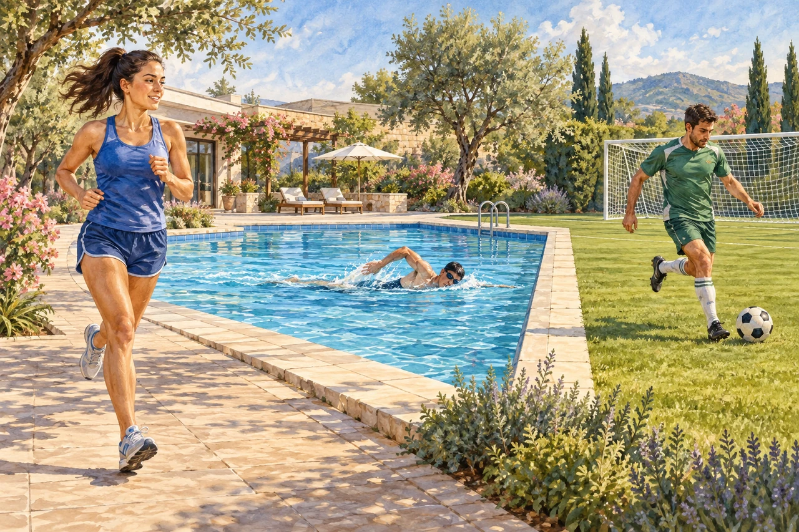

Presentation
Вспоминаем в ситуации
Вспомните слова Units 1–4. Сначала прочитайте реплики, затем переходите к словарю и упражнениям.
I'm a student. My father is a doctor.
I'm sitting at home. My father is cooking dinner.
Вспомните слова Units 1–4. Сначала прочитайте реплики, затем переходите к словарю и упражнениям.
Все слова прежнего урока сохранены. Нажмите на динамик, чтобы услышать слово.
Выберите игру и заработайте звёзды ★. Ответы проверяются сразу.
Заполните пропуски. Если даны слова в скобках — составьте вопрос.
Найдите соответствующие пары.
Нажмите на английское слово, затем на его перевод.
My father is cooking dinner in the kitchen. My mother is washing the car. My brother is doing his homework, and I'm reading a book.
Our dog isn't sitting quietly — it's running! Right now, it's raining, but we aren't watching TV.
Синтезированный голос помогает прочитать текст, но не гарантирует показанную интонацию. Для точной фонетики нужны проверенные записи.
Слушайте и повторяйте. Обычная и медленная скорость помогают разобрать фразу.
В обычных утверждениях am / is / are произносятся быстро и невнятно — гласный сокращается до /ə/ (schwa), они «сливаются» с соседними словами. Но в кратких ответах (Yes, I am.) те же слова звучат полно и под ударением.
В беглой речи конец одного слова «перетекает» в начало следующего — особенно когда согласный встречается с гласным, или после r перед гласной. Значок ‿ показывает место слияния.
Под ударением — «важные» слова (существительные, прилагательные, смысловые глаголы). Местоимения, артикли и am/is/are обычно безударны — прочитайте вслух только выделенные слова, и вы поймёте смысл фразы.
Кончик языка слегка касается верхних зубов, голосовые связки работают (звук звонкий) — не путайте с русским «з» или «д». Отработаем три частых слова этого урока.
Новый диалог про планы и погоду — не повторение блоков B/C. Выберите скорость, слушайте, ответьте, потом проверьте по скрипту.
Посмотрите на картинку и опишите действия людей — используйте present continuous.

Для зачёта: ответь на все вопросы, собери пары во всех раундах, опиши картинку (от 5 слов) и напиши итоговый текст (от 20 слов), затем нажми «Готово!».
Напишите 6-8 предложений: что делают люди рядом с вами, какая сегодня погода и который час. Используйте только "to be" и present continuous. Минимум 10 слов из этого урока.